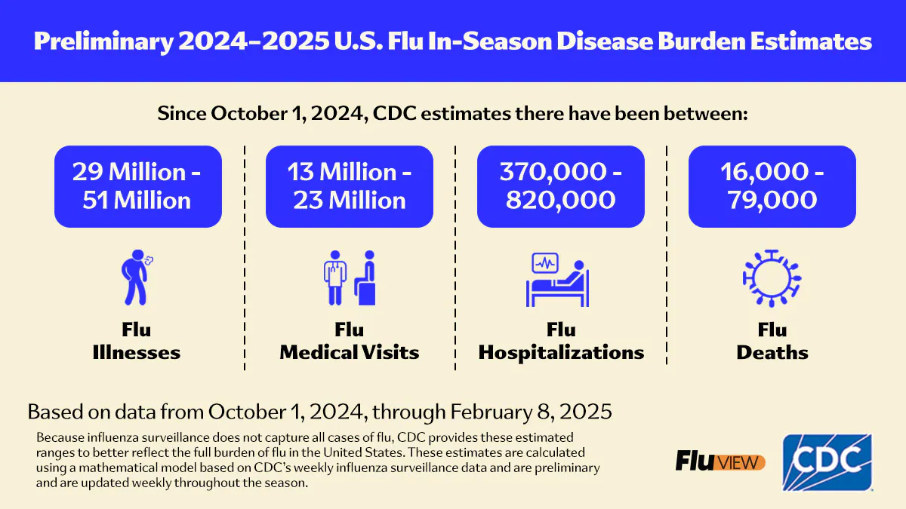
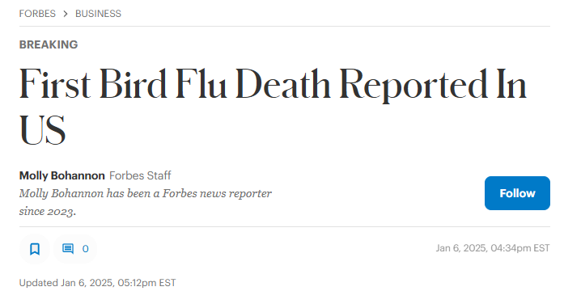
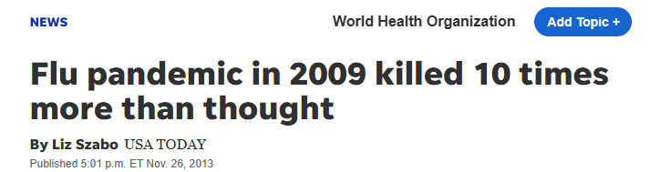
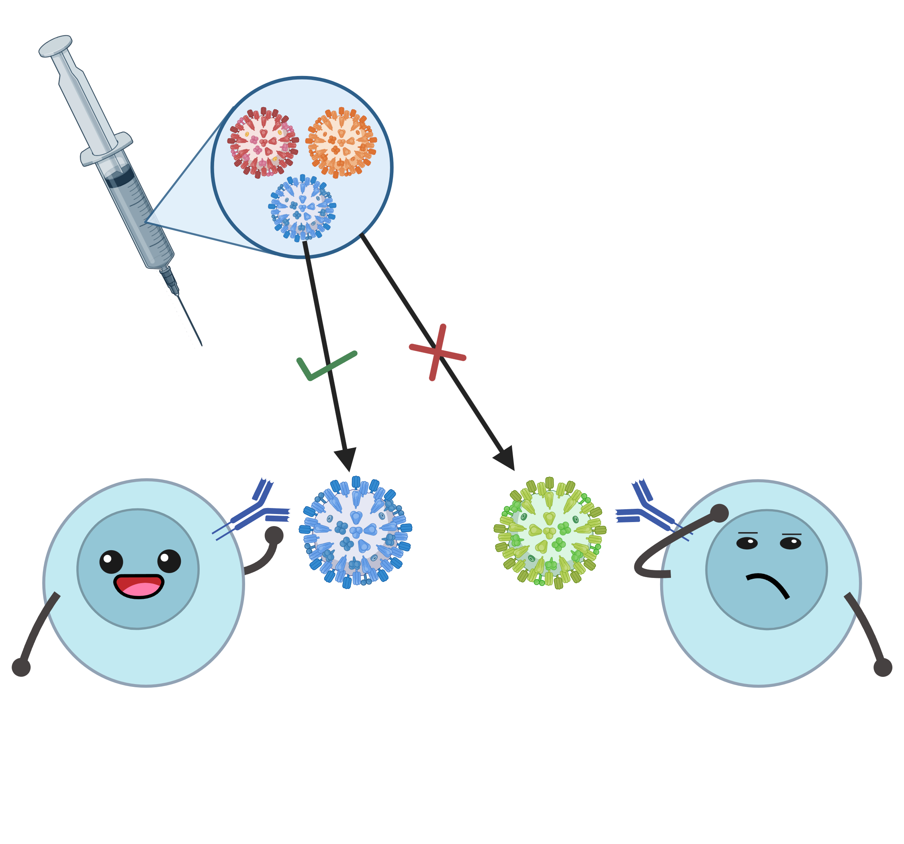
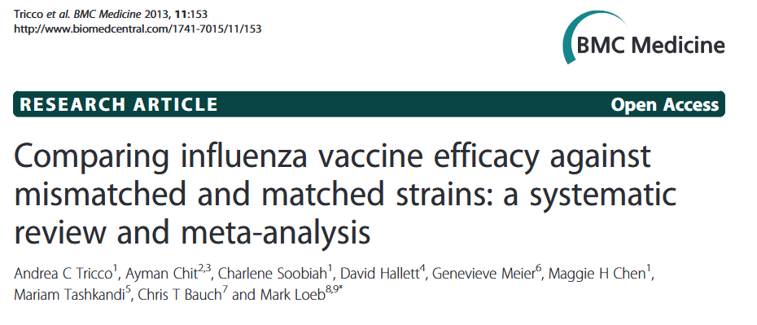
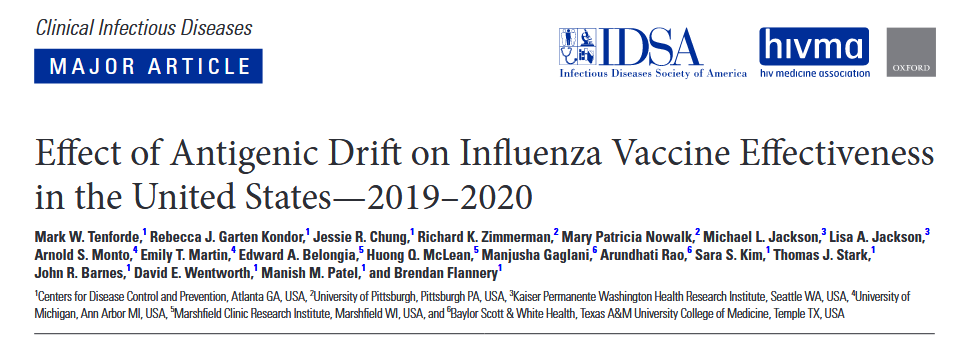
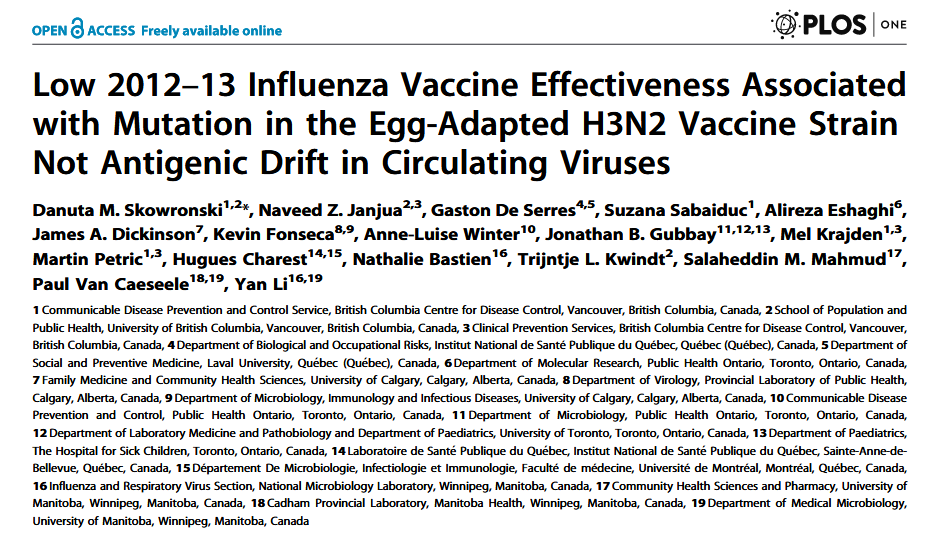
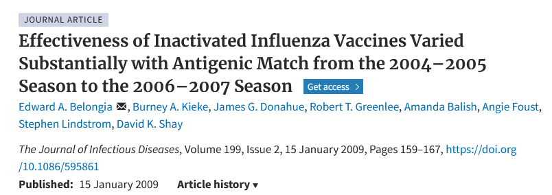
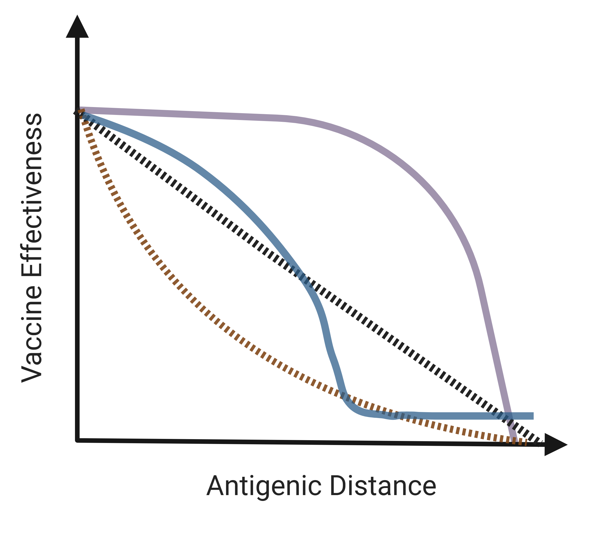

Season | Location | Population | SubType | Proportiona | VaxStrain | Repeatb | CircStrain | AgDist1c | AgDist2c | AgDist3c | Nd | VEe |
|---|---|---|---|---|---|---|---|---|---|---|---|---|
xx | xx | xx | xx | xx | xx | xx | xx | xx | xx | xx | xx | xx |
aProportion of infections caused by the listed circulating strain. | ||||||||||||
bNumber of uninterrupted years this strain has been used in the vaccine, including the referenced season. | ||||||||||||
cAntigenic distance methods will be specified in these column names when final methods are decided. | ||||||||||||
dStudy sample size. | ||||||||||||
eVE with std. error and uncertainty intervals, as available. | ||||||||||||
VE~AgDist Background and Proposal
Savannah L. Miller
1 Background
Flu Burden
CDC (2025)
Flu in the news

 
Influenza virus
Multiple strains in a flu vaccine
Types and Subtypes:
- A/H1N1
- A/H3N2
- A/H5N1
- B/Victoria
B/Yamagata- C
- D
Strains (WHO 2024):
- A/Victoria/4897/2022 (H1N1)pdm09-like virus
- A/Thailand/8/2022 (H3N2)-like virus
- B/Austria/1359417/2021 (B/Victoria lineage)-like virus
Vaccine strains are chosen each year
Based on (CDC 2024b):
- Which influenza viruses are making people sick prior to the upcoming flu season,
- The extent to which those viruses are spreading prior to the upcoming flu season,
- How well the previous season’s vaccines may protect against those influenza viruses, and
- The ability of vaccine viruses to provide cross-protection against a range of related influenza viruses of the same type or subtype/lineage.
VE is variable and often low
Why is VE so low?
- Many different theories (probably a combination):
- Original antigenic sin/imprinting
- Low immunogenicity
- Vaccine mismatch
- Match/Mismatch between vaccine strain and circulating strain
- Often dichotomized and defined differently from lab to lab and paper to paper

Research Gap
- There does not seem to be one clear answer about how much impact a vaccine’s “mismatch” actually has on its effectiveness (Cobey et al. 2018)
Match/Mismatch Papers




VE ~ Match Papers
Kelly et al., 2013 (Section 1.11)
Tricco et al., 2013 (Section 1.12)
Belongia et al., 2016 (Section 1.13)
Beran et al., 2021 (Section 1.14)
Okoli et al., 2021 (Section 1.15)
“Moderate influenza vaccine effectiveness with variable effectiveness by match between circulating and vaccine strains in Australian adults aged 20–64 years, 2007–2011” (Kelly et al. 2013)
“Comparing influenza vaccine efficacy against mismatched and matched strains: a systematic review and meta-analysis” (Tricco et al. 2013)
“Variable influenza vaccine effectiveness by subtype: a systematic review and meta-analysis of test-negative design studies” (Belongia et al. 2016)
“Prevention of influenza during mismatched seasons in older adults with an MF59-adjuvanted quadrivalent influenza vaccine: a randomised, controlled, multicentre, phase 3 efficacy study” (Beran et al. 2021)
“Variable seasonal influenza vaccine effectiveness across geographical regions, age groups and levels of vaccine antigenic similarity with circulating virus strains: A systematic review and meta-analysis of the evidence from test-negative design studies after the 2009/10 influenza pandemic” (Okoli et al. 2021)
Another (better) way
- Antigenic distance
- A continuous measure of the difference between two strains
- Different ways to calculate
- The idea:
- Model VE as predicted by antigenic distance
- Gather data from a wide range of years, locations; look at different subtypes
- Get a big picture view of the effect of “mismatch”
Antigenic Distance Background
Antigenic Distance Methods
- P-epitope (Gupta, Earl, and Deem 2006; Pan and Deem 2016)
VE ~ Distance Papers
“Quantifying influenza vaccine efficacy and antigenic distance” (Gupta, Earl, and Deem 2006)
“Prediction of influenza B vaccine effectiveness from sequence data” (Pan and Deem 2016)
2 Proposed Project
Table 1
FIgure 1
- Primary modeling result: what is the association between VE and antigenic distance?

3 References
Belongia, Edward A, Melissa D Simpson, Jennifer P King, Maria E Sundaram, Nicholas S Kelley, Michael T Osterholm, and Huong Q McLean. 2016. “Variable Influenza Vaccine Effectiveness by Subtype: A Systematic Review and Meta-Analysis of Test-Negative Design Studies.” The Lancet Infectious Diseases 16 (8): 942–51. https://doi.org/10.1016/S1473-3099(16)00129-8.
Beran, Jiří, Humberto Reynales, Airi Poder, Charles Y Yu, Punnee Pitisuttithum, Lee Li Yuan, Wim Vermeulen, et al. 2021. “Prevention of Influenza During Mismatched Seasons in Older Adults with an MF59-adjuvanted Quadrivalent Influenza Vaccine: A Randomised, Controlled, Multicentre, Phase 3 Efficacy Study.” The Lancet Infectious Diseases 21 (7): 1027–37. https://doi.org/10.1016/S1473-3099(20)30694-0.
CDC. 2024a. “Types of Influenza Viruses.” Influenza (Flu). September 27, 2024. https://www.cdc.gov/flu/about/viruses-types.html.
———. 2024b. “Selecting Viruses for the Seasonal Influenza Vaccine.” Influenza (Flu). September 30, 2024. https://www.cdc.gov/flu/vaccine-process/vaccine-selection.html.
———. 2024c. “CDC Seasonal Flu Vaccine Effectiveness Studies.” Flu Vaccines Work. October 3, 2024. https://www.cdc.gov/flu-vaccines-work/php/effectiveness-studies/index.html.
———. 2025. “Preliminary Estimated Flu Disease Burden 2024-2025 Flu Season.” Flu Burden. February 13, 2025. https://www.cdc.gov/flu-burden/php/data-vis/2024-2025.html.
Cobey, Sarah, Sigrid Gouma, Kaela Parkhouse, Benjamin S. Chambers, Hildegund C. Ertl, Kenneth E. Schmader, Rebecca A. Halpin, et al. 2018. “Poor Immunogenicity, Not Vaccine Strain Egg Adaptation, May Explain the Low H3N2 Influenza Vaccine Effectiveness in 2012-2013.” Clin Infect Dis 67 (3): 327–33. https://doi.org/10.1093/cid/ciy097.
Gupta, Vishal, David J. Earl, and Michael W. Deem. 2006. “Quantifying Influenza Vaccine Efficacy and Antigenic Distance.” Vaccine, 3rd International Conference on Vaccines for Enteric Diseases, 24 (18): 3881–88. https://doi.org/10.1016/j.vaccine.2006.01.010.
Kelly, Heath A., Sheena G. Sullivan, Kristina A. Grant, and James E. Fielding. 2013. “Moderate Influenza Vaccine Effectiveness with Variable Effectiveness by Match Between Circulating and Vaccine Strains in Australian Adults Aged 20–64 Years, 2007–2011.” Influenza and Other Respiratory Viruses 7 (5): 729–37. https://doi.org/10.1111/irv.12018.
Okoli, G. N., F. Racovitan, T. Abdulwahid, C. H. Righolt, and S. M. Mahmud. 2021. “Variable Seasonal Influenza Vaccine Effectiveness Across Geographical Regions, Age Groups and Levels of Vaccine Antigenic Similarity with Circulating Virus Strains: A Systematic Review and Meta-Analysis of the Evidence from Test-Negative Design Studies After the 2009/10 Influenza Pandemic.” Vaccine 39 (8): 1225–40. https://doi.org/10.1016/j.vaccine.2021.01.032.
Pan, Yidan, and Michael W. Deem. 2016. “Prediction of Influenza B Vaccine Effectiveness from Sequence Data.” Vaccine 34 (38): 4610–17. https://doi.org/10.1016/j.vaccine.2016.07.015.
Tricco, Andrea C., Ayman Chit, Charlene Soobiah, David Hallett, Genevieve Meier, Maggie H. Chen, Mariam Tashkandi, Chris T. Bauch, and Mark Loeb. 2013. “Comparing Influenza Vaccine Efficacy Against Mismatched and Matched Strains: A Systematic Review and Meta-Analysis.” BMC Medicine 11 (1): 153. https://doi.org/10.1186/1741-7015-11-153.
WHO. 2024. “Recommended Composition of Influenza Virus Vaccines for Use in the 2024-2025 Northern Hemisphere Influenza Season.” 2024. https://www.who.int/publications/m/item/recommended-composition-of-influenza-virus-vaccines-for-use-in-the-2024-2025-northern-hemisphere-influenza-season.